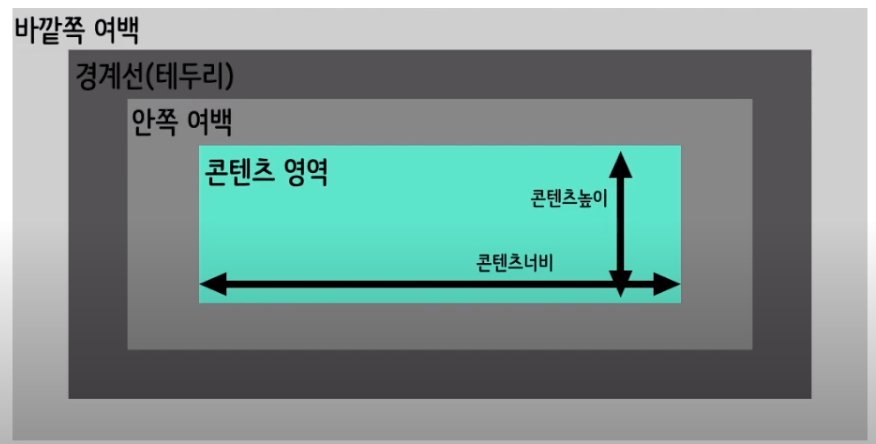
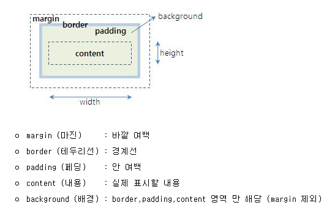
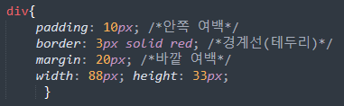
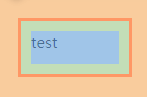

박스모델 (Box-Model)
브라우저가 요소를 렌더링 할 때, 각각의 요소는 기본적으로 사각형 형태로 영역
을 차지하게 된다. 이 영역을 '박스'라 표현하며, css는 박스의 크기,위치,속성
(색,배경,테두리 모양 등)을 결정할 수 있다.
하나의 박스는 다음 네 개의 영역으로 구성됨
- 콘텐츠 영역
- 안쪽 여백
- 경계선(테두리)
- 바깥쪽 여백


박스 간 영역의 크기를 정의할 수 있는 속성
- 콘텐츠 영역 : width(너비), geigth(높이)
- 안쪽 여백 : padding
- 바깥쪽 여백 : margin
- 테두리 : dorder-width
Ex


이렇게 영역이 잡힌다.
test가 들어가있는 파란색 영역은 콘텐츠
초록색 영역은 padding(안쪽 여백)
빨간 테두리는 border
주황색 영역은 바깥쪽 여백인 margin이다
내용 정리
- 브라우저는 요소를 렌더링할 때 박스 모델에 따라 사각형으로 표현한다.
- 하나의 박스는 네 개의 영역으로 구성된다.
- 콘텐츠 영역, 안쪽 여백, 경계선, 바깥쪽 여백.
- 각 영역의 크기를 정의하는 속성이 존재함
- span태그는 인라인 이므로 widwh geigth설정이 안된다.
이럴땐 display속성을 이용해서 inline-blick로 변경 해주면 된다.